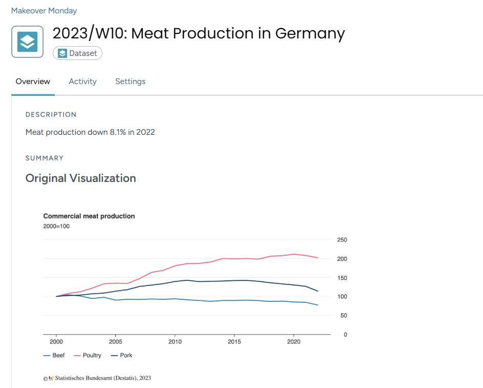
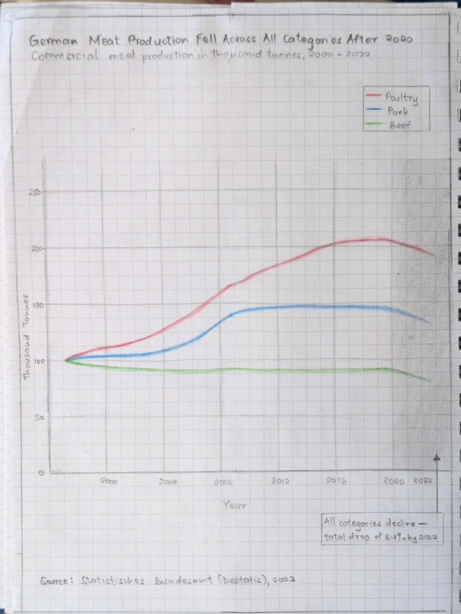
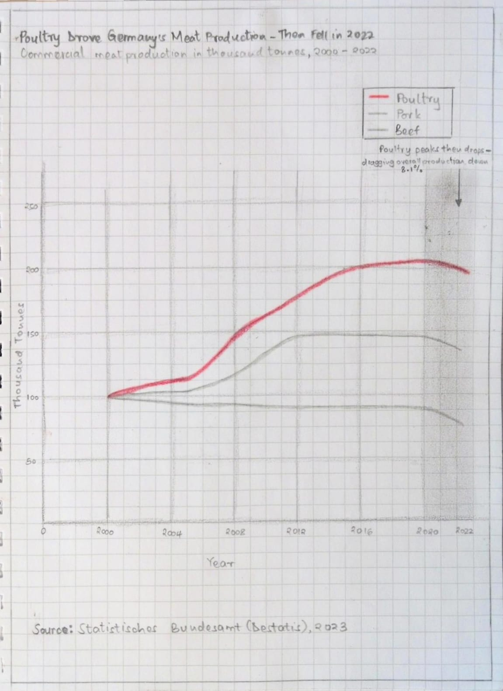

home page | data viz examples | critique by design | final project I | final project II | final project III
This page documents my process for Assignment 3 & 4 — Critique by Design. I selected a data visualization from MakeoverMonday, critiqued it using Stephen Few's Data Visualization Effectiveness Profile, sketched a redesign, tested it with peers, and built a final redesigned visualization in Tableau Public. The writeup below follows each step as it happened, written as a journal of the process.
The process taught me that a good redesign starts long before you open any tool. Working through the critique framework first gave me a clear picture of exactly what was broken and why. That fed directly into the sketches, the peer feedback shaped the final design decisions, and by the time I sat down to build in Tableau I already knew what story I was telling and how. The goal throughout was to take a chart that made simple data feel complicated and turn it into something that communicates one clear finding immediately.
I selected the Commercial Meat Production in Germany chart from MakeoverMonday 2023, Week 10. The data comes from Statistisches Bundesamt (Destatis), Germany's Federal Statistical Office.
Original visualization: MakeoverMonday 2023 Week 10

I picked this one because it confused me straight away and I wanted to understand why. Here is what stood out:
For farmers, industry suppliers and government policymakers who need clear information they can act on, this chart does not serve them well.
What also drew me to it was that the data underneath is actually simple. Three meat types, going up or down over time. The problem was not the data, it was almost every design decision made around it. That felt like a strong opportunity to redesign.
I used Stephen Few's Data Visualization Effectiveness Profile to critique the original across seven categories. I submitted my full responses via the course Google Form. Here is a summary of what I found.
Usefulness - 4/10
The chart would not be very useful to its intended audience. The 2000=100 index is not explained anywhere, so someone reading it would likely be confused about what the numbers mean. Are they tonnes, percentages, something else? The most important story, the 8.1% drop in 2022, is not visible or emphasized at all. For an audience that needs clear information, this chart falls short.
Completeness - 5/10
Key information is missing. The 2000=100 notation is never explained. There are no units stated anywhere. The 8.1% drop is mentioned in the description but does not appear on the chart itself. There is also no context for why production changed over the years.
Perceptibility - 4/10
The chart requires a lot of effort to read. The y-axis on the right side is disorienting because most readers look left first. The legend is small and easy to miss. Without gridlines it is hard to track where a line sits at any given year. The chart makes you work too hard for information that should be immediately visible.
Truthfulness - 6/10
The data is accurately sourced so there is no deliberate misleading happening here. But the 2000=100 index hides actual production volumes, and the 8.1% drop being left out of the chart makes the most important finding feel buried rather than communicated. The chart is not lying but it is not being fully transparent either.
Intuitiveness - 2/10
The data itself is simple and a line chart is a familiar format. But almost every labeling and placement decision breaks normal reading habits. The 2000=100 notation needs prior knowledge to understand. A first time viewer would not know what story to take away. The irony is the underlying data is not complex at all, the design choices are what make it feel hard.
Aesthetics - 4/10
The chart is neutral looking, not offensive but not helpful either. The white background is clean. But the y-axis placement creates visual imbalance, the legend feels like an afterthought, and there is no visual hierarchy to guide the eye toward what matters most.
Engagement - 5/10
The confusion actually draws you in at first because you notice something feels off and want to figure it out. The topic is genuinely interesting too. But the chart does not capitalize on that at all. There is no hook, no highlighted story, nothing that makes you feel like this matters. Confusion is not the same as engagement.
On the critique method:
Few's method was more useful than I expected. It forced me to be specific instead of just saying "this chart is confusing." The most helpful part was how it separated things I was mixing together. Completeness and perceptibility felt like the same issue to me at first but they are actually asking very different questions. Compared to the Good Charts approach, Few gives you a structured checklist that is easier to apply consistently across different visualizations.
Before opening Tableau I sketched two versions on paper. Following what Berinato describes in Good Charts, I talked through what I was trying to say first, then sketched. My declared story going in was: all three meat categories fell after 2020, with a total drop of 8.1% by 2022.
Sketch 1: All three lines shown equally
My first sketch showed all three lines in distinct colors with a shaded gray region between 2020 and 2022 to highlight the drop period. The title declared the story directly. An annotation inside the shaded region called out the 8.1% drop. The y-axis was moved to the left and units were labeled clearly.

Sketch 2: Poultry as the main story
My second sketch focused the story. Poultry was drawn in bold red as the dominant line. Beef and Pork were drawn in light gray as background context. This applied the idea of declaring one clear story rather than leaving the reader to find it themselves.

I shared both sketches with three peers during an in-class session. I showed the sketches without explaining anything and asked four questions after they had looked at them. I recorded shared feedback without attributing specific comments to specific people.
Interview questions:
Participants:
| Area | Feedback across all participants |
|---|---|
| Could they describe the story? | Yes, all three understood the general story from the title alone |
| What confused them? | Both Beef and Pork being the same gray made them hard to tell apart. The highlight region and axis consistency also came up. |
| Sketch preferred | Sketch 2, unanimous across all three |
| Key suggestions | Label Beef and Pork directly on the chart. Focus the time range on 2012 to 2022. Tighten the title. Make the chart taller and narrower. |
Synthesis:
Two patterns came through clearly. All three participants preferred Sketch 2 because the poultry focused approach made the story immediately obvious. They also noted that having Beef and Pork in the same gray made it hard to tell which line was which. The fix was not to give them different colors but to label them directly at the end of each line, keeping them gray and non-distracting but still identifiable.
The most useful piece of feedback was that the rise in production before 2020 was drawing more attention than the drop after it. That meant my declared story was getting buried behind earlier growth. Starting the chart at 2012 instead of 2000 was the fix that made most sense.
I also watched the MakeoverMonday critique video for Week 10 2023 by Andy Kriebel after doing my own critique and sketches. He flagged the same issues I did: the flat ratio of the original chart flattened out differences between lines, and the y-axis needed to move to the left. His redesign kept the line chart format which confirmed I was on the right track. My version went further by adding a shaded region and annotation to make the drop period impossible to miss.
Changes made heading into the final build:
I built the final redesign in Tableau Public. The changes from the original are direct responses to what I found in the critique and what peers flagged in testing.
The redesign tells one clear story: all categories of German commercial meat production fell after 2020, and the chart makes that impossible to miss.
I used Claude (Anthropic) throughout this assignment as a thinking and drafting partner. Claude helped me work through the critique framework category by category, drafted written summaries based on my own observations and scores, helped me develop my sketch approach, organized my peer feedback, and helped structure the content for this page. All observations, scores, design decisions and creative directions were my own. Claude helped me put them into words clearly. The final visualization was built entirely by me in Tableau Public.
home page | data viz examples | critique by design | final project I | final project II | final project III